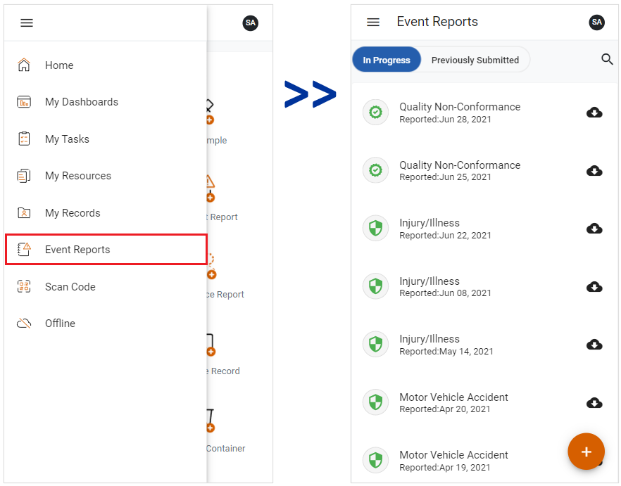

The Event Reports view allows you to quickly record and report accidents and events. These may be incidents (with or without related injury or illness), suggestions, or observations. Events may include documents or pictures.
The available Event Report types are defined in the myCority Event Report Selection look-up table in the Cority platform. When you create a new Event Report, you will be presented with a list of event report types that have been assigned to your GDDLOFB (Geographic Location, Department, Division, Location, Organization, Facility Type, and Building).
To access the Event Reports module, click the side menu button and select Event Reports. The Event Reports view will open.

Scroll through the Event Reports screen to see In Progress and Previously Submitted records. Scroll down to see more records.